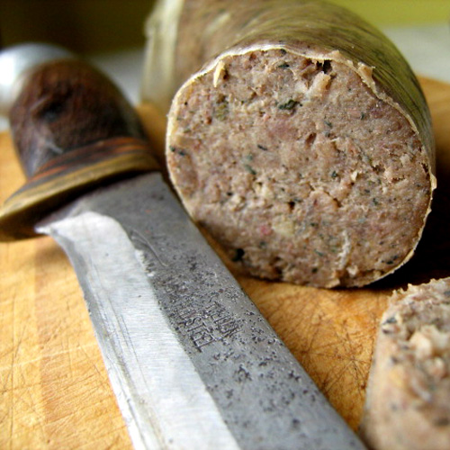
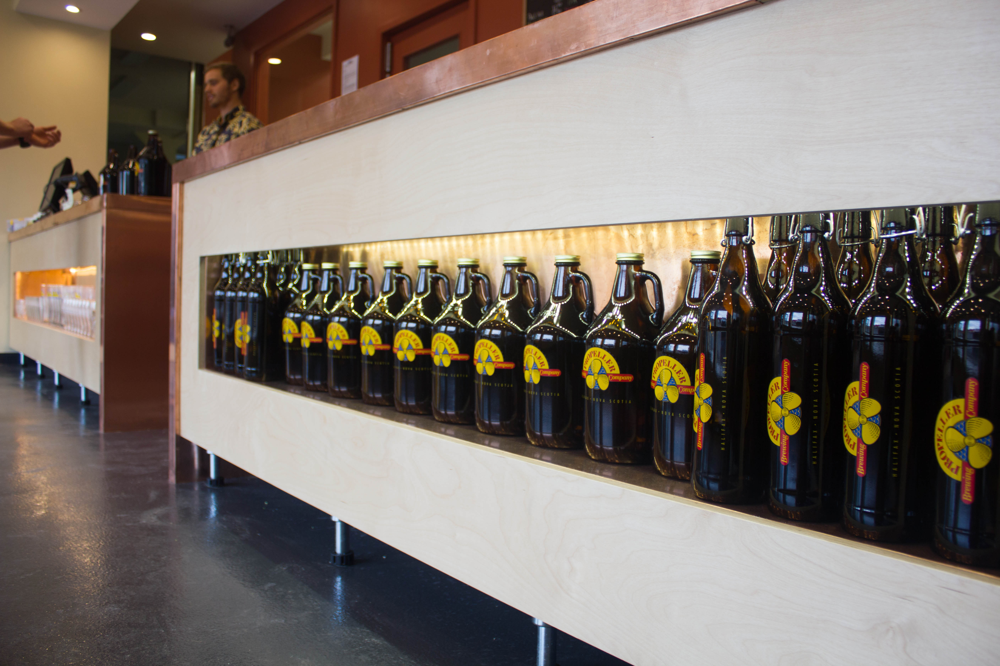
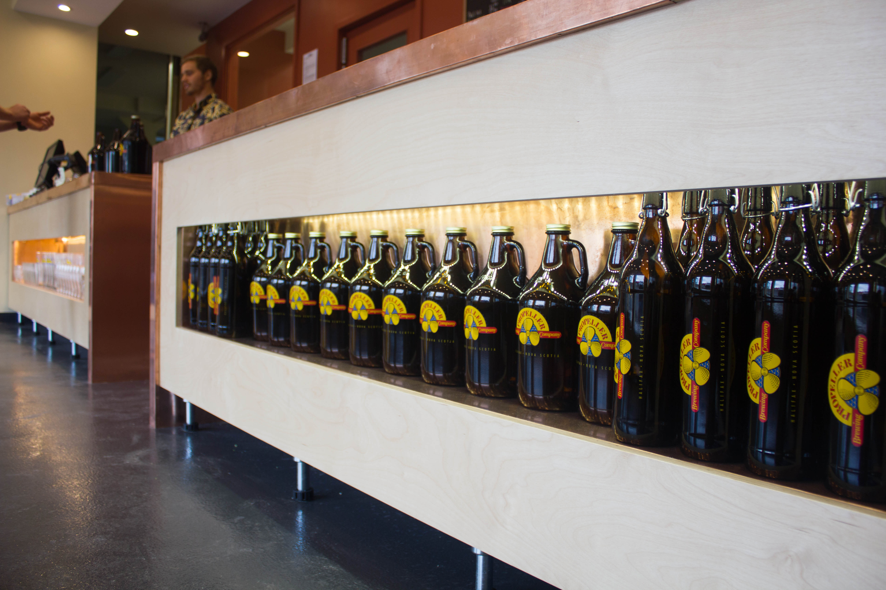
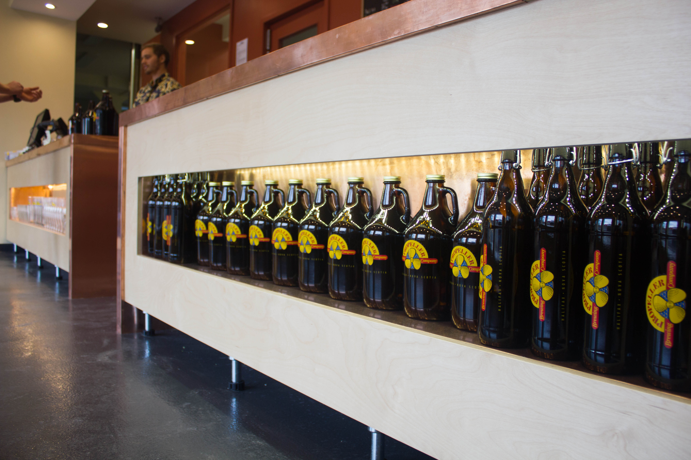

Nova Scotia Food and Drink
Seafood features strongly on most menus. The pub district in Halifax is said to be one of the best in
North America, with dozens of establishments.
Specialities:
- Seafood galore: try fish and clam chowders, lobster and salmon. Not forgetting scallops: fried,
baked or grilled, and usually served with tartare sauce.
- Solomon gundy (a herring dish).
- Lunenburg sausage exemplifies the German influence, as do hugger in buff, fish and scrunchions,
Dutch mess and house bankin - all names for tasty combinations of fish and potatoes in cream sauce, onions
and salt pork.
- Desserts make use of plentiful fruit and berries, especially blueberries, and include a stewed fruit
and dumplings dish called grunt, and baked apple dumplings wrapped in pastry and served with cream, sugar or
lemon sauce.
Regional drinks:
Nova Scotia beer warmer is a glass of beer with a dash of hot pepper sauce to get the blood circulating again.
Provincial beers include Alexander Keith's and Propeller.
Nova Scotia has recently become a popular wine-producing area, especially in the Annapolis Valley. A number of good
vintages have been produced there.
Canada's only single malt whiskey, Glen Breton Rare, is produced by the Glenora Inn and Distillery in Cape Breton.


Clam Chowder
4 quarts littleneck clams (about 1 2/3 cups, cooked and chopped)
1 clove garlic, chopped
1 cup water
2 ounces salt pork, finely chopped
2 cups chopped onions
3 tablespoons flour
4 1/2 cups clam broth
3 cups fish stock
1 1/2 pounds potatoes, peeled and diced into 1/2-inch cubes
2 cups light cream
Oyster crackers (optional, for serving)
Clean the clams and place them in a large pot along with the garlic and water. Steam the clams just until opened,
about 6-10 minutes, depending upon their size. Drain and shell the clams, reserving the broth. Mince the clam flesh
and set aside. Filter the clam broth either through coffee filters or cheesecloth and set aside.
In a large, heavy pot slowly render the salt pork. Remove the cracklings and set them aside.
Slowly cook the onions in the fat for about 6 minutes, stirring frequently, or until cooked through but not browned.
Stir in the flour and cook, stirring, for 3 minutes. Add the reserved clam broth and fish stock, and whisk to remove any
flour lumps. Bring the liquid to a boil, add the potatoes, lower the heat, and simmer until the potatoes are cooked through, about 15 minutes.
Stir in the reserved clams, salt-pork cracklings, and light cream. Heat the chowder until it is the temperature you prefer.
Serve in large soup bowls with oyster crackers on the side.
Makes 8 servings
Bitter steak pie made with Propeller Bitter
Serves 4-6
1 tbsp Oil
900g/2lb Braising Steak, cut into 2.5cm/1-inch cubes
2 Onions, peeled and sliced lengthways
1 heaped tbsp Plain Flour
1 341ml. bottle of Propeller Extra special Bitter
360ml Beef Stock
1 Bay Leaf
2 teasp Fresh Thyme Leaves
Salt and Black Pepper
100g Mushrooms, sliced
225g Puff Pastry
1 small Egg, beaten
Heat the oil in a large saucepan until very hot, add the meat and fry until well browned and sealed on all sides. Remove from
the pan with a slotted spoon and set aside.
Reheat the oil in the pan, add the onions and sauté for a 3-4 minutes until browned.
Sprinkle in the flour and cook, stirring for 2 minutes then gradually add the ale, stirring constantly.
Return the meat to the pan together with the stock, bay leaf and thyme. Season well with salt and pepper then cover and simmer
gently for 1½ - 2 hours. Preheat the oven to 220C, 425F, Gas Mark 7.
Add the mushrooms to the meat mix well then transfer to an ovenproof pie dish.
Roll out the pastry large enough to cover the pie, dampen the edges of the dish and place over the filling pressing down the edges.
Flute the edges with a fork or your fingers, brush with the beaten egg and bake in the oven for 20 minutes until the pastry is golden
brown. Serve hot....with a cold Propeller Bitter to make it just Prop'r.
 
